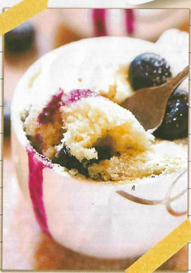

Eggless Blueberry Mug Cake

| Ingredients |
|---|
| Butter, melted |
| 2 and 1/2 tablespoons Milk 2 tablespoons Vanilla extract |
| 1/2 teaspoon Baking Powder |
| 1/2 teaspoon All Purpose Flour 1/4 cup Blueberries |
Directions
1) In a bowl, whisk together butter, sugar, milk and vanilla extract.
2) Add baking powder and flour and whisk till combined. Mix in blueberries and pour into two microwave proof tea cups or one mug.*Only fill the cups halfway because the cake rises up quite a bit.
3) Microwave for 1 minute on high.
4) Serve the blueberry mug cake dusted with sugar and topped with more blueberries.